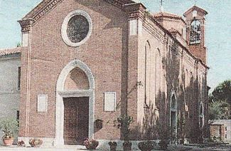
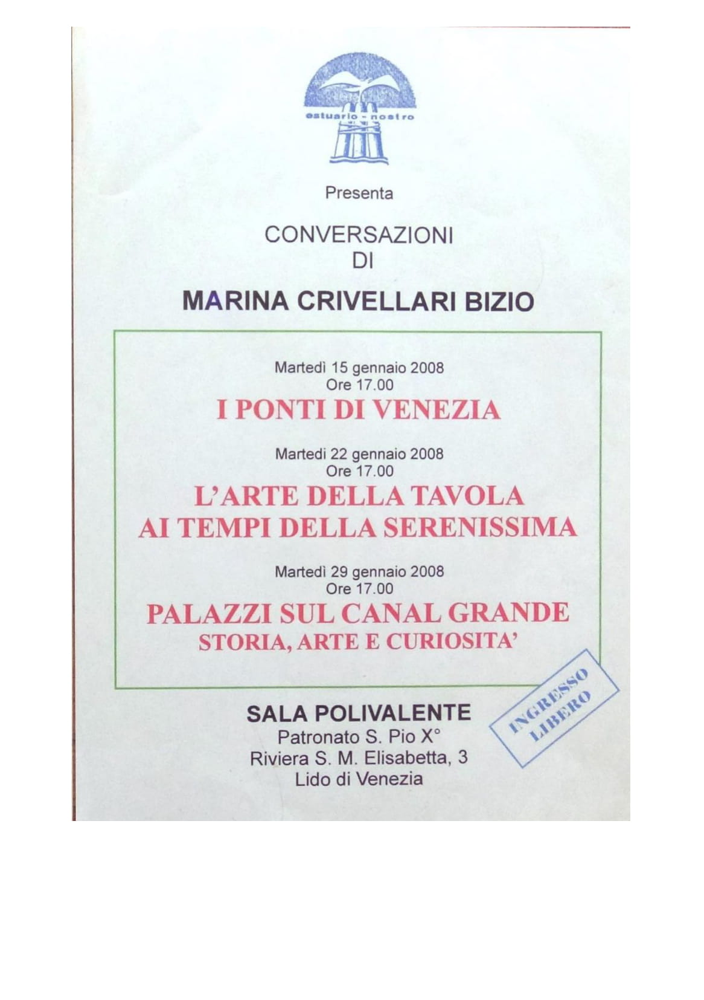
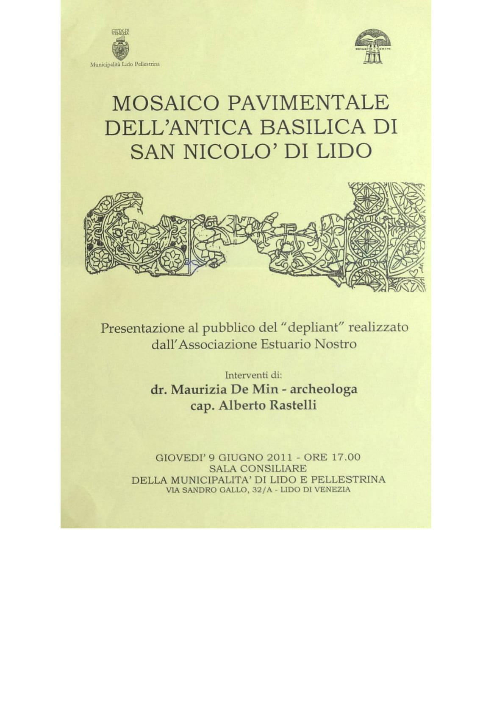
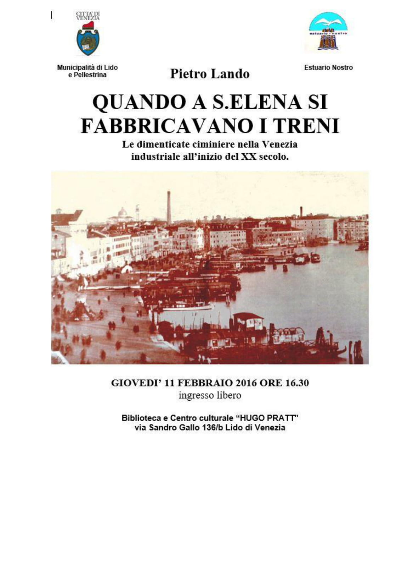

Chi siamo:
1- L’associazione «Estuario Nostro» è nata al Lido di Venezia nel 1977 e si è costituita nell’anno 1982 con atto notarile registrato. E’ iscritta nel Registro del l’Associazionismo del Comune di Venezia al n°333. L’associazione persegue le seguenti finalità :
a) Conservazione, tutela, riqualificazione del patrimonio naturale, ambientale, storico artistico della laguna di Venezia.
b) Sensibilizzazione dell’opinione pubblica sui temi ecologici in senso lato, di carattere sia generale che locale.
c) Stimolo all’applicazione delle leggi vigenti e all’emanazione di provvedimenti legislativi allo scopo di evitare la manomissione del patrimonio naturale, ambientale, storico, artistico della laguna di Venezia.
d) In generale, svolgimento di qualsiasi altra azione che possa rendersi utile per il conseguimento degli scopi dell'associazione.
Il Consiglio Direttivo
Il 12 dicembre 2019 è stato eletto il Consiglio Direttivo
.
Presidente (Dimissionario)
Paolo Fumagalli
.
Consiglieri
Alberto Rastelli
Aldo Sigovini
Daniela Marchesini
Francesco Mario D'Elia
Marina Falchetta Greco
Marina Zennaro Sigovini
.
Segretaria - Tesoriera
Wilma Furian

Nascita dell'Associazione Estuario Nostro

Iscrizione dell'Associazione al Comune di Venezia

Entrata nel Coordinamento delle Ass.ni Ambientaliste

Elezione dell'attuale direttivo


Le nostre pubblicazioni
Nel 2019/2020 a causa della pandemia, le regole anticovid hanno vietato ogni genere di assebramento, pertanto è stata sospesa ogni attitività che prevedeva incontri con i soci. Estuario Nostro non poteva ecclissarsi. Sono state distribuite ai soci delle pubblicazioni edite dall'associazione:


Alberoni 40 anni fa - La cultura dei litorali
Pubblicazione dedicata a Maria Fazzini appassionata della natura incline a proteggerla e divulgarla

Punta di S.Nicolò
Piante storiche ridisegnate per mettere in evidenza i cambiamenti geomorfologici e gli elementi storici nei vari periodi

S.Nicolò area S.I.C. e dintorni
Volumetto a scopo divulgativo del Cap. Alberto Rastelli redatto sulla base di esperienze personali.

Estuario Nostro - La storia 1976 2019
Raccolta, in 132 pagine foto d'epoca, dei più importanti interveti dell'assciazione nel periodo 1976 - 2019

Storia ed Ecologia dell'Area Militare di S.Nicolò
Una delegazione di Estuario Nostro ha visitato l'area nord (S.Nicolò) dell'isola presso la zona militare della Marina Militare, ne è scaturita questa pubblicazione.

Perché iscriversi
Perchè, terminato il periodo di pandemia riprenderanno le attività normali storiche dell'associazione.
Scarica (o stampa) il modulo di iscrizione
.
Vai alla voce "iscrizione" del menu all'inizio di questa pagina
Scarica (o stampa) il modulo di autorizzazione
al trattamento dei dati personali dichiarazione di consenso ART.13 del Regolamento Ue/2016/697
invia per e-mail i due moduli compilati
all'indirizzo scritto sul modulo di iscrizione accertandosi di aver compilato il proprio indirizzo di posta elettronica
Le attività storiche di Estuario Nostro
Alcuni degli interventi promossi con richieste e pressioni verso gli enti preposti stimolando l'applicazione corretta delle leggi.
| La Cultura dei Litorali - Seconda edizione stampata nel 1993. (600 copie). Già negli anni '80 dopo la mostra tenuta al Casinò del Lido di Venezia sotto la guida della Prof. Maria Fazzini e del prof. Lorenzo Bonometto, venne ciclostilata la prima guida storico naturalistica degli Aberoni. Una pubblicazione che descrive un'importante ricerca effettuata dal 1976 al 1979. E' un lavoro molto utile in quanto attira l'attenzione delle autorità sui valori paesaggistici e storici della località esaminata. La pubblicazione si articola in tre parti: "La flora del litorale sabbioso di Alberoni" - testo di Maria Fazzini tavole botaniche di Eva Marelli. "Suggerimenti per l'osservazione di alcuni invertebrati degli ambienti di spiaggia e duna" testo e tavola faunistica di Lorenzo Bonometto "L'evoluzione geologica della località Alberoni" testo e tavole di Alberto Rastelli. Estuario Nostro ha pubblicato recentemente il libro "Alberoni 40 anni fa" di Alberto Rastelli che illustra un'ampia esposizione degli avvenimenti e degli elaborati riguardanti "La cultura dei litorali" ricerca venne, poi, estesa a tutti i litorali del Comune di Venezia, da Cà Roman alla foce del Sile e si traduce in altre mostre allestite a Venezia, Mestre ed in altre località del Veneto. | La Lotta al Moto Ondoso - Dal 1987 Augusto Pulliero, presidente dell'associazione, focalizza l'attenzione di Estuario Nostro sul problema del moto ondoso sul Canal Grande fino a stampare la pubblicazione "Canal Grande mare forza 3". Il libro, corredato da ottime foto e pregevoli incisioni, è una denuncia fortissima del moto ondoso prodotto dalle imbarcazioni a motore che già vent'anni fa costituiva un grosso problema, anzi "il problema" per la sopravvivenza fisica di Venezia. L'opera raccoglie il consenso e l'appoggio morale soprattutto da associazioni protezionistiche e remiere, da alcune realtà economiche ma da pochissimi uomini politici. L'Associazione continua ad impegnarsi nella de nuncia dei danni provocati dalle onde dei natanti a motore su rive e fondamenta evidenziando il problema con mostre, partecipando a manifestazioni in Canal Grande, e sottolineandolo in uno studio pubblicato dall' "Istituto Veneto di Scienze, Lettere ed Arti." Nel 1994 l'allora Presidente di "Estuario Nostro" Alberto Rastelli invia al Sindaco Massimo Cacciari una lettera in cui chiede fortemente che vengano adottati una serie di interventi normativi riguardanti il moto ondoso tendenti a contrastarlo ed invita il Sindaco a sottoporre il problema all'attenzione del Comitato Interministeriale per la Salva guardia di Venezia perché si stabiliscano fondi della Legge Speciale da destinare ai possessori di imbarcazioni che procedessero alla trasformazione del loro natante secondo le nuove norme. | La Chiesa di S. Nicolò o S. Nicoletto La chiesa attuale data la sua prima edificazione nell'anno 1044 sotto il patrocinio del doge Domenico Contarini. In essa furono deposti i resti di san Nicolò il Grande, San Nicolò Zio e san Teodoro trafugati nel 1100 dai veneziani dalla città anatolica di Myra, alla conclusione della crociata veneziana in Terrasanta cui partecipò anche il doge Vitale I Michiel in persona. San Nicolò divenne ben presto il santo protettore dei pescatori, dei naviganti e dei soldati che partivano per le Crociate in Terrasanta. Sul suo altare venivano poste semplici statuette votive in terracotta per implorare protezione ed assistenza. Pare che alcune di queste statuette votive siano state rinvenute tra la sabbia della spiaggia tra l'Ospedale al Mare e la diga foranea. La chiesa attuale è un monumento del XVII° secolo (1627) appartenente ad un monastero benedettino che conserva ancora il chiostro del XVI° secolo, iniziato nel 1530. Nel 1806, con il decreto napoleonico di soppressione dei monasteri, la chiesa fu destinata a cappella della caserma militare fino al 1926 anno in cui i Frati Minori accettarono l'incarico di provvedere alla gestione del monastero. Nel 1942 l'allora soprintendente ai Monumenti prof. Mario Guiotto, nel corso di indagini sulle costruzioni romaniche sepolte sotto le fabbriche posteriori, ebbe l'occasione di vedere sotto la volta di un magazzino del Convento (allora in uso come caserma) alcuni capitelli semi murati e ricoperti da uno strato d'intonaco. Decise, allora, di eseguire scavi e ricerche più accurate giungendo ad identificare le fondamenta di un edificio a tre navate separate da colonne su base quadrata, navate terminanti con tre absidi semicircolari. I capitelli delle colonne (di stile corinzio "a palmette") sono, senz'altro, databili all'undicesimo secolo per una serie di analogie riscontrate con altri capitelli coerenti, come quelli della Basilica di Aquileia, di San Giusto a Trieste, di Sveti Lovrec in Istria e con quattro capitelli conservati al Museo Civico di Padova. |
| Il Mosaico di S. Nicolò - Negli anni ’50 alcuni sondaggi rivelarono la presenza di un mosaico nel pavimento della sala del chiostro corrispondente alla navata meridionale dell'antica chiesa romanica. Il mosaico venne restaurato negli anni dal 1957 al 1959. In seguito alla grande alluvione del 1966 il mosaico restaurato fu invaso da una massa enorme di acqua e nafta. Il mosaico era ancora sotto la coltre sudicia nel 1990 anno in cui il capitano Alberto Rastelli, allora presidente della associazione “ESTUARIO NOSTRO” si faceva promotore di una campagna di sensibilizzazione presso la Soprintendenza ai Beni Architettonici perché si procedesse alla pulizia del mosaico. Mese di maggio 1990. Il Presidente di “Estuario Nostro” Alberto Rastelli scrive a “Il Gazzettino” proponendo che in occasione della “Festa della Sensa” che si approssima, le autorità competenti si attivino per la pulizia ed il ripristino del mosaico pavimentale dell’antica abbazia contariniana risalente all’anno mille, ora visibile dal chiostro del convento di S. Nicolò di Lido. Sabato 23 aprile1994 la nostra Associazione promuove all’Ateneo Veneto una conferenza sull’ intervento di recupero del mosaico deciso dalla Soprintendenza ai Monumenti di Venezia. La conferenza segna l’apertura delle celebrazioni organizzate dal “Comitato Festa della Sensa” comitato in cui “Estuario Nostro” Finalmente nel 1994 l’opera di pulizia veniva portata a termine ed era possibile tornare ad ammirare la bella composizione musiva pavimentale formata da motivi geometrici e floreali. In quell’occasione la nostra associazione si attivò per creare interesse attorno all’evento ed organizzò un “ex tempore” di pittura e disegno riservato agli studenti delle scuole elementari e medie di Lido e Pellestrina avente come tema:” I MOSAICI PAVIMENTALI DELL’ORIGINARIA BASILICA DI S. NICOLO’ DI LIDO. ed alla fine le opere realizzate vennero esposte, il giorno della Festa della Sensa, all’interno del chiostro di San Nicolò dove furono premiate quelle più meritevoli. Il lavoro viene svolto nei giorni 11 12 e 13 maggio 1994 e domenica 15 maggio le opere realizzate vengono esposte all’interno del chiostro di S. Nicolò dove vengono anche premiati i lavori più significativi. Dopo alcuni anni di interventi di salvaguardia, finalmente nel 2002 tutta l’area del mosaico e della navata meridionale era stata perfettamente restaurata. Ora il mosaico si trova in condizioni di degrado (acqua e muffe). | La Minerva sul Leone - Opera dello scultore Antonio Giaccarelli, abbelliva (si fa per dire) il tetto sopra l’ingresso delle Gallerie dell’Accademia fin dal 1830 circa. Nel giugno del 1938 la statua venne rimossa e collocata nei giardini della Biennale in un angolo piuttosto anonimo. Nascosta poi dalla vegetazione arborea venne alfine “liberata” su nostra segnalazione del 1995.
|
Gli Alberi del Lido - Giovedì 19 febbraio 2009 alle ore 15,30 è stato abbattuto l’ultimo albero della macchia verde fronte Casinò che annoverava, oltre ai pini, anche splendidi pioppi bianchi ultra centenari con un diametro di tronco di un’ottantina di centimetri. Al posto della pineta sono rimasti enormi mucchi di ramaglie che vengono rapidamente caricate su autocarri e fatte sparire dalla vista. La notizia della “deforestazione“ e le foto indecenti che la testimoniano sono apparse, oltre che sulla stampa cittadina, anche sull’edizione nazionale del “Corriere della Sera”. Ciò significa che la battaglia contro chi sta distruggendo il verde pubblico del Lido per sostituirlo col cemento sta prendendo vigore giorno dopo giorno. La pineta non c’è più ma è rimasta la nostra rabbia e quella dei duemilacinquescento lidensi che ci hanno dato il loro sostegno. Vi assicuriamo che non rimarremo fermi. Ci sono altre battaglie da combattere: contro il previsto abbattimento degli alberi in piazzale S.M. Elisabetta, contro la deforestazione dell’area verde della Favorita, ma soprattutto contro l’arroganza di chi non tiene alcun conto delle richieste di una parte consistente dei citta dini del Lido. Il “Coordinamento Associazioni Ambientaliste del Lido” cui si associa anche “Estuario Nostro” ha organizzato il 2 dicembre 2009 un incontro pubblico nella sede della Municipalità del Lido per affrontare soprattutto il problema della gestione del verde pubblico nell’isola. Dopo un’introduzione di Cristina Romieri, che ha anticipato molti dei temi che sarebbero stati trattati dagli oratori nel corso dell’incontro, è stato proiettato un dvd prodotto da Paolo Fumagalli che documenta gli abbattimenti degli alberi operati da “Veritas” e la lotta degli ambientalisti che si oppongono a questa vera e propria “sottrazione di verde” che sta depauperando il patrimonio arboreo del Lido. Il filmato illustra anche il progetto di “Veritas” che mira ad eliminare tutti gli alberi del Lido che sono in “pericolo di caduta”. Nel testo del progetto si legge che la maggior parte degli alberi pe ricolanti sono quelli che sorgono ai lati delle strade: alberi a cui sono state amputate gran parte delle radici ad opera delle ruspe che hanno eseguito scavi senza rispettare le distanze dagli alberi stabili te dai Regolamenti Comunali Il dvd si chiude con la richiesta esplicita che la Polizia Municipale verifichi il rispetto dei regolamenti da parte delle Imprese e che ci sia una figura istituzionale che di tale rispetto sia responsabile. Il prof. Patrizio Giulini, docente di botanica presso l’Università di Padova ha trattato il tema della gestione del verde in molti paesi europei improntata al rispetto delle alberature che rappresentano una grande risorsa ambientale in termini di ossigenazione e depurazione dell’aria, di assorbimento dei rumori e di ornamento urbano. Alla base di questi comportamenti virtuosi sta una cultura del verde che in Italia è poco praticata. L’albero è spesso considerato un problema più che una risorsa: basti pensare che il primo atto di una cosiddetta “riqualificazione” di spazi urbani viene preceduta da sistematici abbattimenti di alberi come l’eliminazione della pineta stori ca del casinò per far spazio alla costruzione del nuovo Palazzo del Cinema al Lido di Venezia. |
Il Leone Marciano – Arrigo Battistini: Nel 2011 ci accorgiamo che all’ex Ospedale al Mare il leone non c’è più! Abbiamo avuto notizia dalla stampa che l’effigie marmorea è stata rimossa dall’ U. L. S. S. 12 che sembra esserne la legittima proprietaria. Malgrado la favorevole accoglienza espressa dagli assessori Zanella, Rumiz, Salvadori e dal Presidente della Municipalità Gusso alla proposta di spostare il leone in piazzetta Lepanto fatta a suo tempo da “Estuario Nostro”, nessun rappresentante delle Istituzioni cittadine ha pensato di metterne al corrente l’U.L.S.S. 12 che sembra esserne il legittimo proprietario. Abbiamo chiesto spiegazioni alla Soprintendenza ai Monumenti di Venezia che ha posto, a suo tempo, un vincolo sull’intera area ospedaliera, vincolo che non consente alcuna manomissione senza l’autorizzazione della Soprintendenza stessa. La risposta che abbiamo avuto ci è sembrata francamente incredibile: il vincolo sul leone marciano era stato tolto prima che la statua fosse spostata ma non era chiaro dove fosse il leone e chi l’avesse portato via. Leggendo l’articolo“ Il crocifisso scomparso nella chiesa dell’ex ospedale” apprendo che dalla chiesetta di S. Maria Nascente è sparita l’intera “Via Crucis”, opera pregiata del pittore veneziano Giuseppe Cherubini, che è stata “presa in consegna” dall’U. L. S. S. 12 veneziana nel 2003 per essere restaurata. Analogo interesse per il restauro si è manifestato anche nella prima decade di dicembre 2008 quando la stessa Azienda Sanitaria “prende in consegna” il leone marciano in pietra d’Istria presente nell’area dell’ex Ospedale al Mare e lo trasferisce in un magazzino in quel di Mestre assieme alla colonna che lo sorregge. | L’Amianto in spiaggia - Il 18 gennaio 2010 una socia della nostra Associazione ci ha segna lato che nella spiaggia delle “Quattro Fontane” al Lido di Venezia, a pochi metri dalla battigia erano, stati accumulati un certo numero di sacchi ognuno con una vistosa scritta “Pericolo Amianto”. Abbiamo fatto un sopralluogo ed abbiamo potuto accertare che i sacchi erano ben 138, che la zona era solo delimitata da un nastro colorato che permetteva di entrare in contatto con i sacchi alcuni dei quali apparivano bucati e che data la vicinanza al mare, c’era il rischio che il materiale venisse disperso dalle onde. Abbiamo subito informato lo SPISAL (che è un ente regionale delegato al controllo dell’ambiente) e gli organi di stampa. E’ emerso che il materiale era stato rinvenuto nel corso di scavi fatti alla radice del molo della spiaggia e che si tratta di “eternit” (fibro amianto) ondulato usato per coprire le capanne della spiaggia, sepolto ad 1 metro di profondità. Si è scatenata subito nella stampa cittadina una serie di dichiara zioni fatte da Enti coinvolti in vario modo nella cosa; dichiarazioni mirate solo a palleggiarsi l’un l’altro le competenze piuttosto che ad affrontare seriamente la questione e decidere di scoprire se esistono altre discariche del genere nelle spiagge del Lido e, in caso affermativo, di provvedere alla loro eliminazione ed al disinquina mento dei siti. “Estuario Nostro” assieme ad altre Associazioni ambientaliste ha ritenuto opportuno inviare l’allarme agli organi d’informazione. | Chiesetta S. Maria Nascente – (Corriere del Veneto) quindici quadretti della via Crucis del Cherubini, da quella volta, non li ha visti più nessuno. Dodici anni fa sono stati trasferiti dalla chiesetta dell'ospedale al Mare a un magazzino di Mestre, ufficialmente per restauro, ma è come se fossero spariti. Ora il ciclo è stato sequestrato dalla Procura e il dg dell'Usl 12 Antonio Padoan è indagato per «rimozione illecita» di opere d'arte. E l'associazione Estuario nostro del Lido, che si era presa a cuore la vicenda, esulta. «Siamo noi ad aver messo in moto la Sovrintendenza spiega il presidente, l'architetto Arrigo Battistini ora siamo soddisfatti: da anni ci battiamo perché la via Crucis ritorni dov'era». Lo spostamento delle opere non era stato segnalato alla Sovrintendenza, come prevede la legge. «Sono quadri che nessuno riesce a stimare perché non sono catalogati continua Battistini ma esisto no nella memoria di chi li ha visti prima che l'ULSS li trasferisse». Estuario nostro aveva intrapreso una vera e propria «crociata» contro Padoan. «Avevamo scritto una lettera aperta al Patriarca, fatto una raccolta firme, inviato alla direzione dell'Usi una marea di lettere. Ma le nostre comunicazioni erano cadute nel vuoto. Ora siamo contenti di vedere un'autorità che ha preso sul serio la nostra segnalazione».  |
| L’Antico Murazzo Zendrini (1738) - Nel 1978 l’Associazione “Estuario Nostro” stava compiendo alcuni rilievi nel tentativo di ricostruire la storia dell’evoluzione geografica degli Alberoni. In località “antico faro degli Alberoni” affiorò dalla sabbia un muraglione di pietra d’Istria e ”masegni” In seguito ad accurate indagini condotte sulla cartografia lagunare del 1700 e grazie a preziose indicazioni fornite dalla dott.ssa Tiepolo si giunse alla conclusione che il manufatto sepolto nella sabbia altro non era che il primo esperimento di difesa a mare realizzato con ”masegni” legati fra loro da malta composta da sabbia, calce e pozzolana” un materiale di origine vulcanica. L’aggiunta di “pozzolana” crea una malta che aumenta la sua presa al contatto con l’acqua del mare. Questa proprietà consentì di abbandonare il criterio di costruzione dei muraglioni a difesa delle onde su palificate, creando direttamente nell’acqua marina le fonda zioni dell’argine di difesa e connettendo solidamente fra loro i blocchi di pietra. Nel 1992 Maria Francesca Tiepolo direttrice dell’Archivio di Sta to di Venezia scriveva: “Il 25 maggio dell’anno scorso, in un pomeriggio assolato e ventoso , una festosa cerimonia si svolse quasi sul lembo estremo del Lido davanti all’Istituto “Stella Maris”: veniva in fatti riconsegnato alle autorità ed alla popolazione il primo campione sperimentale di “murazzo”, dissepolto dalla sabbia che per lungo tempo l’aveva ammantato e nascosto a farne perdere la memo ria ed ora riscoperto grazie all’Associazione “Estuario Nostro”, artefice del recupero , effettuato con la collaborazione delle Istituzioni, di Enti e di privati. ” | Il teatrino liberty al Lido di Venezia - Il teatrino liberty, situato al piano terreno del “Padiglione Marinoni in area Ospedale al Mare al Lido di Venezia, costituisce una pregevole testimonianza di architettura degli interni che data il suo allestimento al primo ventennio del secolo scorso. Il teatrino liberty, situato al piano terreno del “Padiglione Marinoni in area Ospedale al Mare al Lido di Venezia, costituisce una pregevole testimonianza di architettura degli interni che data il scuotimento al primo ventennio del secolo scorso. Costruito in virtù di un lascito del dr. Marinoni per essere destinato ad allietare la degenza dei malati, con il diminuire del numero degli ospiti fu adibito a mensa degli ammalati e dei dipendenti della struttura ospedaliera. Successivamente, venuta a mancare la “clientela “ a seguito della progressiva chiusura dei vari padiglioni, è ora ridotto a deposito di documentazione clinica ammonticchiata alla rinfusa. Molti ex degenti ricordano ancora come il teatrino ospitasse le “performances” di valenti compagnie teatrali e di ottime orchestri ne che si esibivano sotto il fiero sguardo del leone alato, effigiato in una colorata vetrata al piombo che fa da fondale al palcoscenico. Questo veniva sovente trasformato in grande schermo per consenti re la proiezione di film. La sala era arredata con sedie e divanetti in puro stile liberty di cui ora non è rimasta traccia alcuna. Il soffitto è deliziosamente affrescato da Giuseppe Cherubini, valente pittore veneziano appartenente alla famosa “Scuola di Burano” che raggruppava un folto numero di artisti tra cui i pittori Da Venezia, Moggioli, Carlo Dalla Zorza, Neno Mori ed altri. | Nel tondo centrale del soffitto un’allegra scena marina descrive un probabile Nettuno attorniato da giocosi amorini e gli stessi amorini compaiono anche nelle quattro vele che completano la scena Giuseppe Cherubini aveva dipinto anche un bellissimo sipario, anch’esso scomparso, sullo stile di quello eseguito nello stesso pe riodo per il Teatro Malibran che, ha avuto miglior sorte. La situazione attuale del teatrino appare gravemente compromessa: la rottura di alcuni vetri consente, oltre l’ingresso di intrusi depredatori, anche l’opera disgregatrice delle intemperie. Gli affreschi presentano infatti vistosi segni di ammaloramento dovuti ad infiltrazioni d’acqua dal soffitto, mentre l’opera dei vandali ha danneggiato alcune parti del la vetrata policroma con l’effigie del leone alato. Già il F. A. I. (Fondo per l’Ambiente) , preoccupato anch’esso per il deplorevole stato in cui versa il teatrino, ha organizzato in Sala Volpi al Lido un incontro cui Per questi motivi la nostra Associazione, che da anni si batte per la tutela dei beni artistici del la città lagunare e del Lido, ha incontrato la Soprintendente ai Beni Ambientali ed Architettonici di Venezia arch. Renata Codello e le ha preci sato: 1 sul teatrino liberty grava un vincolo posto dalla stessa Soprintendenza di Venezia ex lege n° 1089 del 1939 ribadito con decreto legislativo n° 42 del 2004 che ha anche vincolato la chiesetta di S. Ma ria Nascente, hanno partecipato Enti ed Associazioni veneziane ed ha puntato il dito contro il vergognoso abbandono di un bene storico ed artistico unico nel suo genere. i può ancora ammirare, mirabilmente restaurato, nel celebre teatro veneziano, anch’essa collocata nella stessa area dell’Ospedale al Mare ed anch’essa affrescata mirabilmente dallo stesso pittore Giuseppe Cherubini anch’essa collocata nella stessa area dell’Ospedale al Mare ed anch’essa affrescata mirabilmente dallo stesso pittore Giuseppe Cherubini. Già dal 2006 Estuario Nostro chiede con forza l’attuazione urgente dei seguenti interventi: 1 venga effettuato un sopralluogo per accertare lo stato di degrado in cui versa il teatrino 2 si provveda a far eseguire, da chi ne è tenuto per legge, tutte le opere necessarie ad impedire ulteriori atti di vandalismo e di spoliazione. 3 si provveda al restauro delle superfici affrescate che risultino danneggiate dalle infiltrazioni d’acqua provenienti dal soffitto. 4 venga ricomposta l’effigie del leone alato rimettendo in opera i vetri mancanti. |
| (da la Nuova Venezia). L'associazione “Estuario Nostro” ha organizzato in Piazzetta Lepanto una piccola manifestazione dimostrativa per sensibilizzare i resi denti sui rischi che, per il caldo, talmente sofferenti per la siccità del periodo, utilizzando secchi e bottiglie una situazione segnalata proprio la scorsa settimana dalla “Nuova” a fronte del fatto che molte piante stanno in pratica anticipando il periodo autunnale perdendo le foglie con largo anticipo mentre alcuni residenti si sono, da giorni, già organizzati da soli per dare da bere agli alberi con taniche e secchi in numerose strade dell' isola. “Veritas” svolge un servizio sul territorio comunale, quindi anche al Lido, limitato al dare acqua solo alle piante più giovani, tanto che pure in queste ultime ore, le autobotti dell'azienda sono state viste in circolazione a questo fine. Per gli alberi più grandi, che comunque soffrono, l'unico aiuto sta arrivando in poche zone da parte di volonterosi. | “Des Bains in pericolo, sopralluogo urgente” – (da La Nuova Venezia)Esposto di “Estuario Nostro” a Soprintendenza e Carabinieri: acqua dal tetto, storico edificio a rischio. “Estuario Nostro” si muove per la tutela dello storico Hotel Des Bains e lo fa con una lettera inviata in queste ultime ore alla Soprintendenza ai Monumenti di Venezia ed al Nucleo Carabinieri che si occupa della tutela del patrimonio culturale. Il presidente di “Estua rio Nostro”, Arrigo Battistini, ha infatti richiesto un sopralluogo urgente all'interno dell'edificio per poter fugare timori legati a danni subiti dallo stesso ex albergo, uno dei più grandi esempi di architettura liberty che caratterizzano il Lido di Venezia, ma anche un luogo storico che per un secolo ha ospitato letterati, artisti, divi di Hollywood e politici di tutto il mondo. “Abbiamo appreso che il tetto e molte finestre del Des Bains appaiono dissestate a tal punto da con sentire all'acqua piovana di penetrare nel corpo centrale dell'edificio” scrive il presidente dell'associazione Estuario Nostro. L'albergo, costruito nei primi anni del Novecento, ha sempre rappresentato il meglio dell'offerta alberghiera del Lido assieme al prestigioso Hotel Excelsior. Acquistato inizialmente dal gruppo Est Capital e chiuso nel 2008 è stato poi spogliato della mobilia e degli arredi che sono stati messi in vendita. Scampato, per il momento, alla completa realizzazione di un progetto devastante che ne avrebbe cancellato le volumetrie interne assieme alla memoria storica, è in completo abbandono. Poiché l'edificio è tutelato dalla Legge 1089 del 1939 e dal vincolo di tutela paesaggistica (ex. Decreto Legislativo 42/2004) posto su Venezia e le isole della laguna, invitiamo la Soprintendenza ad accertare le reali condizioni del Des Bains. “Attualmente l'ex albergo è sottoposto a una continua vigilanza giorno e notte per scongiurare ingressi da parte di vandali e perso ne senza fissa dimora e quindi evitare che venga esposto ai rischi di un possibile peggioramento delle condizioni del palazzo a seguito di eventuali danneggiamenti o anche incendi. “Nel caso vengano riscontrati i dissesti di cui si parla in questi ultimi tempi” prosegue Arrigo Battistini nella sua lettera a Soprintendenza e carabinieri, “questa associazione chiede che l'attuale proprietario dell'immobile venga sollecitato ad eseguire con urgenza le opere necessarie ad arrestare il degrado causato dall'incuria e dall'assente manutenzione.” | Il parco della Favorita - (Arrigo Battistini) Domenica primo febbraio sono entrato nell'area della “Favorita” ed ho visto quello che potrebbe costituire il primo atto della “rinascita” del Lido. Cosa ben diversa da quel rinascimento sbandierato ai quattro venti qualche anno fa da chi prometteva di rilanciare, ri qualificare e valorizzare la nostra isola ma che poi si è dileguato la sciando macerie, buchi e tanta delusione nel cuore di molti lidensi. Domenica alla “Favorita” ho visto al lavoro un centinaio di persone impegnate a sgombrare l'area da rifiuti di tutti i generi, ad elimina re la vegetazione che impediva i percorsi, a mettere in sicurezza strutture pericolanti. Non si trattava di prezzolati dipendenti di un'impresa: erano citta dini di tutte le età che lavoravano gratis per il bene comune per ri dare dignità al C.R.A.L. dell' ex Ospedale al Mare, sostenuti anche dalla solidarietà di molte imprese commerciali del Lido. Lavoravano per ribadire alle Istituzioni che quest'area deve rima nere alla comunità dei cittadini e ritornare ad essere centro di ag gregazione di adulti e bambini, spazio ricreativo attrezzato ad acco gliere attività sportive. Lavoravano anche per mandare un messag gio di ottimismo alle giovani generazioni. |
.
.
.
.
.
.
.
.
.
.
.
.
Locandine storiche
Qualche riproduzione di locandina storica di Estuario Nostro. Gli originali sono conservati.
. . .
|  |
 |
|||
|  |
||||
|  |
{kind=link}
{kind=link}
{kind=link}
{kind=link}
{kind=link}
{kind=link}
{kind=link}
{kind=link}
{kind=link}
{kind=link}
{kind=link}
{kind=link}
{kind=link}
{kind=link}
{kind=link}
{kind=link}
{kind=link}
{kind=link}
{kind=link}
NOTIZIE
{kind=link}
Attività attuali
Causa pandemia le attività in presenza sono state sospese e riprenderanno appena possible, ecco un elenco di ciò che si sta facendo e quanto previsto per il futuro
-
. . .
Ricognizione della flora nell'area Puntina (Bassanello - Malamocco).Verifica danni dell'alta marea. Una delegazione di Estuario Nostro ha compiuto un sopralluogo con un funzionario dell'ufficio del verde del Comune di Venezia. Sono stati riscontrati problemi di assorbimento dell'acqua, molti avvallamenti, una gran quantità di alberi morti. Riscontrato ancora il mancato trasferimento del cantiere che impedisce la vista panoramica della laguna. Estuario Nostro chiede che i lavori di sistemazione dell'area comincino il più presto possibile.
-
. . .
Area di S.Nicolò sotto il controllo della Marina MilitareUna delegazione di Estuario Nostro ha visitato l'area nord (S.Nicolò) dell'isola presso la zona militare della Marina Militare. Sono state raccolte informazioni che serviranno per la redazione di una prossima pubblicazione riservata ai soci.
-
. . .
Preparazione di altre pubblicazioni per i soci.Continua la serie di pubblicazioni sull'isola del Lido di Venezia curata dal Cap. Alberto Rastelli. -
. . .
Area dell'ex Ospedale al MareUn occhio di riguardo è rivolto verso il progetto di due nuovi resort e altre soluzioni presentate da altre associazioni, L' Associazione Estuario Nostro resta in attesa di qualsiasi decisione pronta a difendere ad ogni costo, come da statuto, la natura, la storia, l'arte e, in questo caso, anche la sanità nel territorio del Lido.
-
. . .
Area costiera Alberoni - Colonia MororsiniRaccolta studi sull'area che parte dallo stabilimento bagni Alberoni fino alla fine dei murazzi.
-
. . .
Contatto con valenti esperti per programmare incontrisu argomenti naturali e storici veneziani ed in particolare del Lido e delle isole della Laguna Veneta.
{kind=link}
{kind=link}
{kind=link}
{kind=link}
{kind=link}
{kind=link}
 <
<